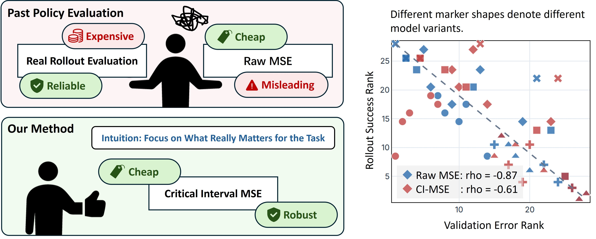
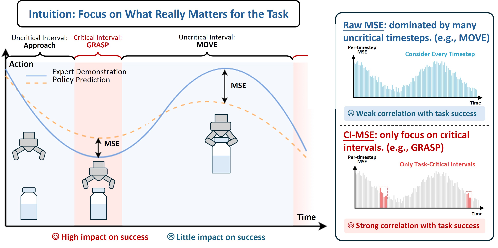
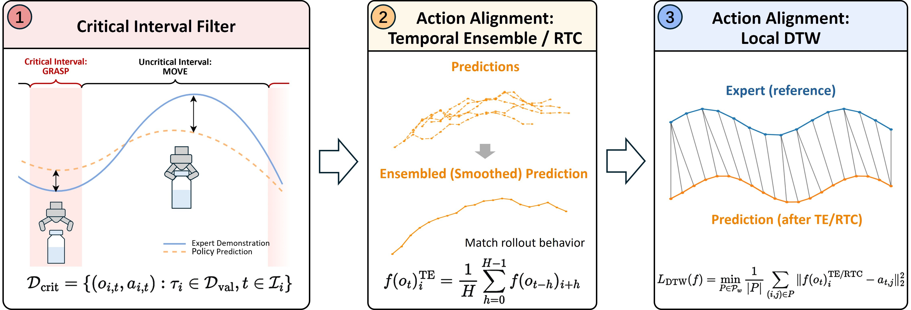

Evaluating robot policies with real rollouts is reliable but costly, while raw offline MSE is cheap but often misleading. (Left) CI-MSE focuses validation on task-critical intervals; it yields offline rankings that better match rollout performance. (Right)
TL;DR
Real-world robot evaluation is costly, while raw MSE often misses the actions that determine success. Critical Interval MSE (CI-MSE) validates only task-critical segments and matches rollout-time action alignment, improving simulation rank correlation with rollout success from raw MSE's -0.61 to -0.87 across 27 policy checkpoints, a 0.26 absolute gain toward the ideal -1 ordering.
Abstract
Real-world evaluation is the gold standard for robot manipulation policies because it tests them against the physical conditions and deployment challenges they are ultimately designed to handle. However, real-world evaluation is also the bottleneck for iterating on robot policies: it is costly, difficult to reproduce, and often too sparse to reliably compare nearby model variants. A straightforward proxy for performance is validation loss on expert demonstrations, but this proxy is often poorly correlated with real-world performance. In this paper, we introduce Critical Interval MSE (CI-MSE), an intuitively simple yet effective offline validation metric. CI-MSE restricts error computation to task-critical segments and pairs it with simple action-alignment procedures that better match rollout-time behavior. Across simulation and real-world experiments, CI-MSE yields a stronger correlation between validation error and rollout performance than raw MSE. Across a wide range of policy checkpoints, CI-MSE achieves a Spearman's rank correlation of -0.87, much closer to the ideal value of -1 than raw MSE's -0.61, demonstrating a significant improvement. We show through sensitivity analysis that our metric is robust to a wide range of hyperparameters. We further study the effectiveness of CI-MSE under evaluation distribution shifts and suggest design boundaries when using this metric. In summary, this paper provides a simple and reliable offline validation tool for accelerating policy iteration.
Execution Records
Intuition

Offline validation can be misleading because many trajectory timesteps are not decisive for task completion, yet they can contribute large action errors. In the bottle-transfer example, transition motions may vary safely across demonstrations, while the grasp stage is brief, contact-rich, and tightly tied to success. CI-MSE therefore measures error on critical intervals instead of averaging across the whole trajectory, so the validation signal is less obscured by uninformative motion.
Approach

STEP 1: Critical interval filter. Identify contiguous task-critical segments such as contact, grasping, insertion, or fine alignment, then compute error only within those intervals. This removes long transit or idle phases that can dominate raw MSE without determining success.
STEP 2: Rollout-aware action alignment. Apply the same deployment-time inference method, such as temporal ensembling or RTC, during offline validation. The measured error then reflects executed action chunks rather than raw one-step predictions.
STEP 3: Local temporal matching. Use DTW with a small warping window to compare predicted and expert action sequences under minor timing shifts. This discounts harmless phase offsets while keeping large reorderings or failures visible.
Simulation Performance
In simulation, CI-MSE is evaluated on a large-scale manipulation benchmark with many policy variants. The comparison includes changes in model architecture, training data scale, training steps, parameter-efficient finetuning, action-head size, and VLM backbone. The key question is whether an offline validation metric can preserve the same ordering as rollout success rate.
Demo videos from the data scale variant family.
Success Rate vs Validation Error
Interactive chart data is unavailable. Please regenerate static/data/ci_mse_simulation.json.
The simulation results show that raw MSE can be reliable for some controlled checkpoint families, but can mis-rank policies when behavior changes through data scale, architecture, or backbone choice. CI-MSE is designed to be more robust in exactly these cases because it focuses on the trajectory segments most responsible for task completion.
Real-World Performance
Real-world evaluation tests whether the simulation trend survives physical deployment. The paper studies diffusion policies on a Franka arm across pour-water, pick-place-mouse, fold-towel, and unplug tasks, using cross-environment and cross-object validation shifts.
Because real-world trial budgets are small and partial success scores can be noisy, the paper uses Elo-style pairwise ranking as the main rollout target. This makes model ordering more stable and gives offline validation a cleaner target for correlation analysis.
The results also show an important practical caveat: validation demonstrations should be collected under conventions similar to the training data. When operators have different action styles, validation error may partly measure style mismatch rather than policy quality.
| Validation metric | Collectors matched | Collectors mismatched | ||||||
|---|---|---|---|---|---|---|---|---|
| Pour water | Arrange mouse | Fold towel | Unplug | |||||
| Env. r↓ | Obj. r↓ | Env. r↓ | Obj. r↓ | Env. r↓ | Obj. r↓ | Env. r↓ | Obj. r↓ | |
| CI-MSE | -0.99 | -0.99 | -0.96 | -0.66 | -0.05 | -0.87 | 0.48 | -0.53 |
| Raw MSE | -0.47 | -0.86 | -0.80 | -0.06 | 0.27 | -0.09 | 0.62 | -0.86 |
Takeaway
- CI-MSE is effective, improving the agreement between offline validation and rollout performance over raw MSE.
- CI-MSE is validated in both simulation and real-world experiments, and is robust across a wide range of hyperparmeter selction.
- The code repository provides an automated pipeline for building customized offline validation benchmark.